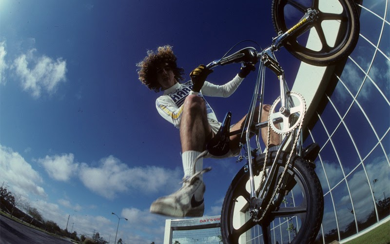
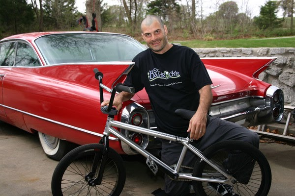
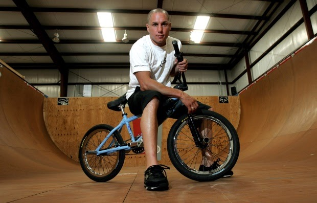
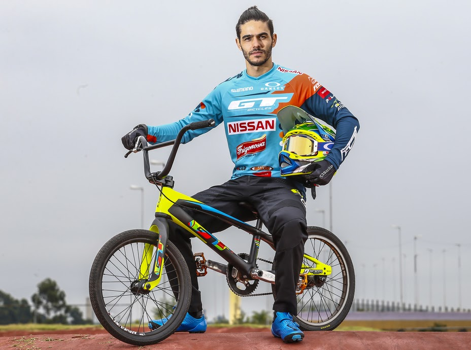

GRANDES NOMES
Todo esporte é marcado por suas lendas, e com o BMX não seria diferente, estes são nomes que entraram pra história com suas grandes manobras e feitos de velocidade, atraíram fãs pelo mundo todo e hoje são lembrados como grandes heróis do esporte, fique com a lista completa dos maiores nomes do esporte.
Bob Haro (Estados Unidos)
Nascido em Pasadena, cidade da Califórnia, Estados Unidos, Bob Haro iniciou sua carreira ainda como amador, participando de competições de bicicletas em sua escola. Com o incentivo de seu pai, uma Honda 100, começou a participar de competições de motocross e acumulou mais de 50 troféus na modalidade até o ano de 1975.
A sua trajetória com as bicicletas voltou em 1976, competindo com a bicicleta de seu irmão e apoiado por uma loja de bicicletas de San Diego. Há quem considere Haro o inventor do estilo. O ex-ciclista foi um dos primeiros inventores no Freestyle, dando a ele muita credibilidade na área, e hoje é fundador e proprietário das Bicicletas Haro.
Mat Hoffman (Estados Unidos)
Esse é nada mais nada menos do que um dos melhores pilotos de rampa vertical da história do BMX. Mat Hoffman aprendeu a andar de BMX sozinho e participou pela primeira vez em uma competição aos 11 anos de idade. Hoffman não tinha nenhum piloto como referência e sempre pilotava conforme suas habilidades.
Aos 15 anos entrou no circuito de BMX Freestyle, entrando para a história como o mais jovem a conseguir esse feito e sendo contratado pela Haro Bikes para competir. E como se não bastasse, o jovem venceu o primeiro concurso em que participou como profissional. Hoffman é considerado o responsável por construir o esporte por décadas, dando suporte aos maiores nomes da área, como Dave Mirra, Jay Miron, Kevin Robinson, entre outros.
Dave Mirra (Estados Unidos)
Como o título deste post sugere, esse é mais um dos grandes nomes do BMX. Dave Mirra foi o maior recordista de medalhas de X Games, conseguindo uma medalha a cada evento 1995-2009. Mirra manteve seu recorde para a maioria das medalhas no Freestyle. O atleta foi patrocinado pela Haros Bikes nos meados de 1990, até o momento em que criou a sua própria marca de bicicletas.
A paixão e a dedicação que Mirra teve pelo esporte ajudou-o a construir uma carreira e uma reputação respeitável dentro da indústria. Infelizmente, Mirra faleceu em 2016 na sua cidade natal, Greenville, deixando um legado para fãs e admiradores dentro do cenário do BMX.
Renato Rezende (Brasil)
Natural de Minas Gerais, Renato Rezende foi o primeiro ciclista brasileiro a representar o país em uma competição de BMX, e também o primeiro a chegar na fase final do Campeonato Mundial de BMX, finalizando em sexta posição.
Filho de professor de Jiu-jitsu, quando pequeno, Rezende negociou com dois atletas de BMX para que ensinassem a ele o esporte, e em troca seu pai lhes ensinaria artes marciais. Foi aí então que nasceu a paixão do atleta pelas bikes. Rezende tornou-se profissional quando o BMX passou a ser considerado um esporte olímpico, em 2008, na Olimpíada de Pequim.
O PRIMEIRO CAMPEÃO
Māris Štrombergs é um ciclista de BMX profissional letão. Nos Jogos Olímpicos de Verão de 2008 em Pequim, ele se tornou o primeiro campeão olímpico no ciclismo BMX. No início daquele ano, venceu o Campeonato Mundial de BMX. Em 2012, Štrombergs prolongou seu título olímpico ao conquistar a medalha de ouro nos Jogos Olímpicos de Londres.
Por ser o primeiro campeão mundial da modalidade, é conhecido por muitos como a maior lenda do BMX, seus feitos nos jogos olímpicos de pequim trouxeram a ele a notoriedade de um verdadeiro campeão, fique agora com imagens da maior lenda viva do esporte: